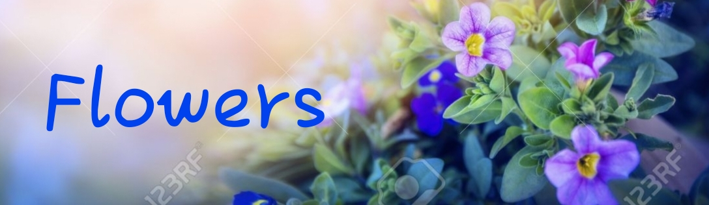
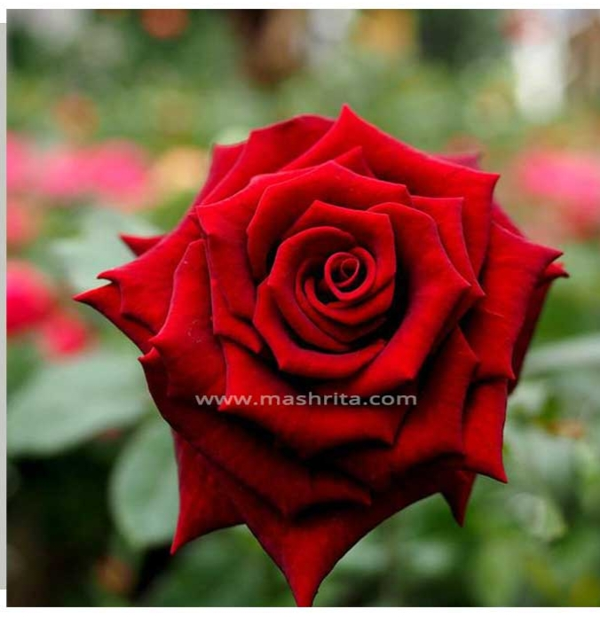
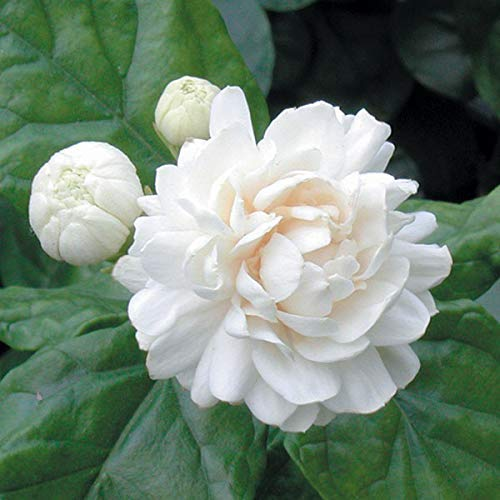
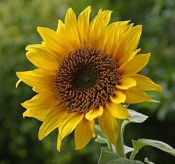

|  | ||
|---|---|---|
| Colours | Flowers | Friuts |
|  | Their petals are edible and rose water (made from soaking the petals in water) is often added to jellies or jams, or is used as flavoring in Indian and Chinese dishes. Roses also grow a berry-shaped fruit called rose hips. The fruit can be orange, red, dark purple, or even black. |
|
|  | The main reason jasmine is so famous is its strong fragrance. People adore the flower for its strong, sweet smell. Countless cultures worldwide include it in aromatic products like candles, perfumes, soaps, and lotions. You can even infuse your own products at home with the lovely scent of the white bloom. |
|
|  | These flowers are unique in that they have the ability to provide energy in the form of nourishment and vibrancy—attributes which mirror the sun and the energy provided by its heat and light. Sunflowers are known for being “happy” flowers, making them the perfect gift to bring joy to someone's (or your) day. |
|